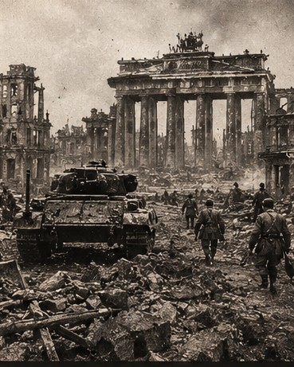

Las consecuencias de la Primera Guerra Mundial
El Tratado de Versalles de 1919 impuso condiciones duras a Alemania. El descontento y la inestabilidad fueron aprovechados por movimientos extremistas.
1939 — 1945 · ARCHIVO HISTÓRICO
Seis años que transformaron el mundo. Explora los acontecimientos de la Segunda Guerra Mundial, conoce sus protagonistas y descubre cómo sus consecuencias siguen presentes en nuestra historia.
Un recorrido por los hechos que marcaron una época.

ANTES DEL CONFLICTO
Para comprender los acontecimientos, primero debemos conocer las tensiones políticas, económicas y territoriales que prepararon el camino hacia el conflicto.
El Tratado de Versalles de 1919 impuso condiciones duras a Alemania. El descontento y la inestabilidad fueron aprovechados por movimientos extremistas.
Adolf Hitler y el Partido Nazi establecieron una dictadura, promovieron el racismo y el antisemitismo, y buscaron expandir el territorio alemán.
Alemania, Italia y Japón impulsaron políticas expansionistas. Las respuestas internacionales no consiguieron detener la escalada de agresiones.
1939 — 1945
Cada tarjeta es un expediente histórico. Haz clic en cualquiera para abrir su historia, conocer sus causas, seguir su desarrollo y entender sus consecuencias.
Instrucción: selecciona un acontecimiento para consultar su expediente completo.
Selecciona un acontecimiento para leer su historia.
LOS PROTAGONISTAS
Distintos países participaron en el conflicto, aunque las alianzas y la situación de cada nación cambiaron a lo largo de la guerra.
ALIANZA
Entre sus principales integrantes estuvieron Reino Unido, la Unión Soviética, Estados Unidos, China y Francia Libre.
Objetivo: derrotar a las potencias del Eje.
ALIANZA
Sus principales integrantes fueron Alemania, Italia y Japón. Sus gobiernos impulsaron políticas expansionistas y agresiones militares.
Sus derrotas condujeron al fin del conflicto.
EL MUNDO DESPUÉS DE 1945
El final de los combates no significó el final del sufrimiento. El conflicto dejó cambios profundos en las sociedades y en las relaciones internacionales.
Decenas de millones de personas murieron. Entre las víctimas hubo civiles, soldados y millones de personas perseguidas y asesinadas por el nazismo.
Numerosas ciudades e infraestructuras quedaron destruidas. Millones de personas tuvieron que reconstruir sus vidas en condiciones difíciles.
En 1945 se fundó la Organización de las Naciones Unidas con el propósito de promover la cooperación internacional y contribuir a mantener la paz.
Estados Unidos y la Unión Soviética se convirtieron en superpotencias. Sus rivalidades dieron paso a la Guerra Fría.
MEMORIA HISTÓRICA
Estudiar la Segunda Guerra Mundial no consiste únicamente en memorizar fechas y nombres. Significa comprender cómo el odio, el autoritarismo, la discriminación y la violencia pueden transformar la vida de millones de personas.
Conocer el pasado nos ayuda a reconocer los peligros del presente y a valorar la paz, los derechos humanos y la cooperación entre los pueblos.
Volver al inicio ↑